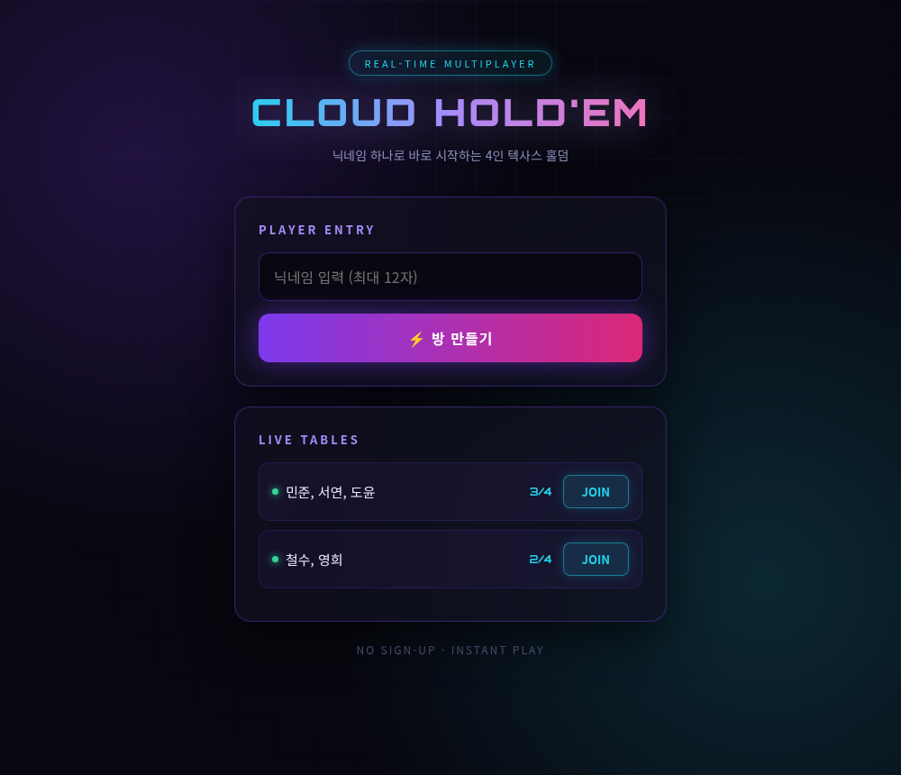
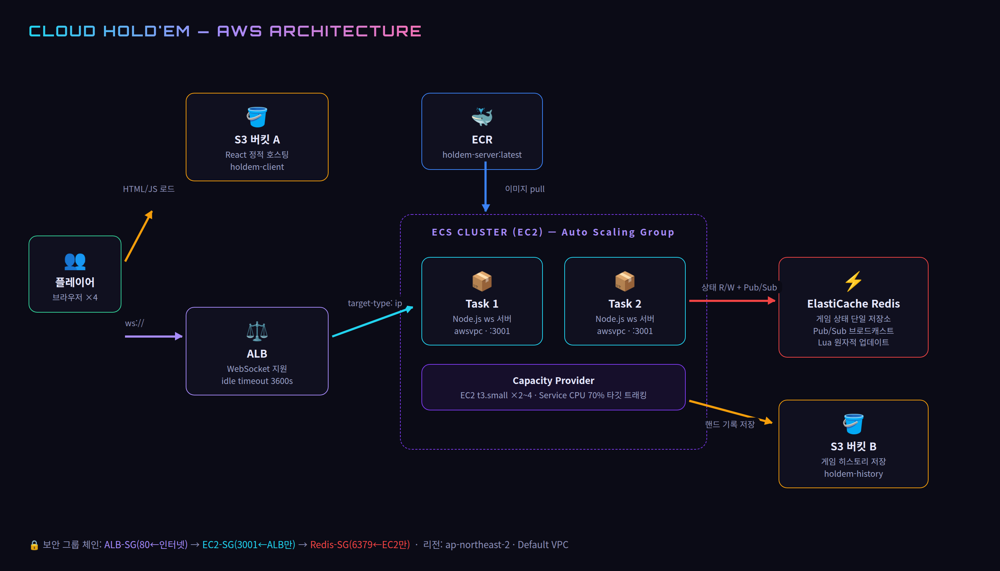
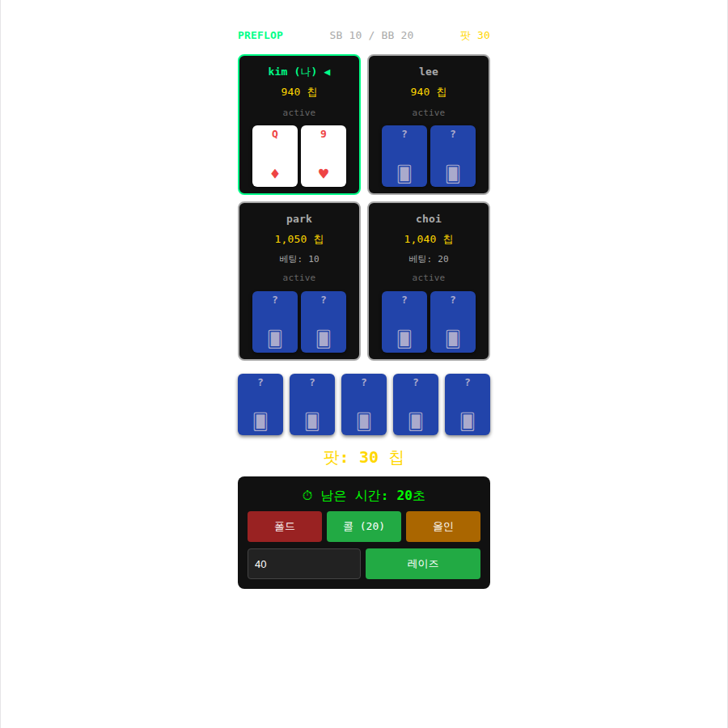

AWS ECS 기반 실시간 멀티플레이어 텍사스 홀덤
발표자: ___________ · 2026.06
게임을 AWS 위에서 어떻게 확장 가능하고 안정적으로 운영하는가 — 컨테이너 오케스트레이션, 상태 관리, 오토스케일링

서버를 완전한 Stateless로 만들고, 게임 상태는 전부 ElastiCache Redis에 둔다
→ sticky session 불필요, 어느 컨테이너든 어느 플레이어든 처리 가능

교훈: 기술 선택은 "유행"이 아니라 규모와 팀에 맞는 복잡도로
turn_deadline 키 1초 폴링 → 만료 시 auto-fold4명의 클라이언트가 ALB를 거쳐 서로 다른 ECS 태스크에 분산 접속 → 프리플랍부터 쇼다운까지 풀 게임 완주 ✓
= Redis 상태 공유와 크로스 인스턴스 Pub/Sub이 프로덕션에서 동작함을 증명
/health 헬스체크 이중화update-service --force-new-deployment 한 줄GET /health 30초 간격, healthy 2회 / unhealthy 3회L7 헬스체크(경로 기반)와 WebSocket 업그레이드 처리, 추후 경로 라우팅 확장성 — 게임 트래픽 규모에서는 ALB가 운영상 단순
트래픽 증가
→ 태스크 CPU 70% 초과
→ 태스크 증설 (서비스 레벨)
→ EC2에 빈 자리 부족
→ EC2 증설 (Capacity Provider)
반대로 한가하면 역순으로 축소 — 실습 중 비용 절약을 위해 desired 0으로 내려두기도
베팅 라운드 종료 판정 누락(게임이 플랍을 못 봄) · 턴 타이머 TTL이 deadline과 동시 만료(auto-fold 불능) · 쇼다운 키커 무시(A페어=K페어 무승부) · 연결 끊김 시 유령 방 잔류

로비(방 생성/입장) → 4인 자동 시작 → 블라인드/베팅 → 쇼다운 → 칩 정산 후 다음 핸드
http://holdem-client-026951011097.s3-website.ap-northeast-2.amazonaws.com
(백업: 로컬 데모 — localhost:5173)
| 리소스 | 사양 | 월 예상 |
|---|---|---|
| EC2 (ECS 노드) | t3.small ×2 | ~$42 |
| ElastiCache | cache.t3.micro | ~$18 |
| ALB | + LCU | ~$17+ |
| S3 / ECR | 정적+이미지 | ~$1 |
| 합계 (EKS였다면 +$73) | ~$78 | |
감사합니다 🃏